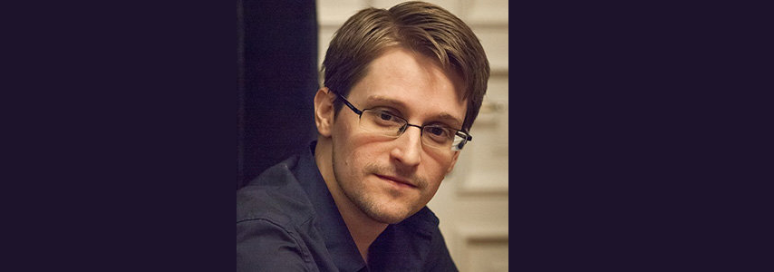

Det er best om sikkerheitstiltaka ikkje er for tungvinte, slik at det blir lettare å gjennomføre dei.
Personvern betyr sikkerheit for ein enkelt persons data. Det kan vere både eigen informasjon, og informasjon som andre passar på for deg. For eksempel passar banken på informasjon om kortbruk for deg. Dette er informasjon som kan fortelje mykje om ein person, slik som kvar hen du brukar pengane dine og kor mykje du brukar.
Av og til vil nokre sikkerheitstiltak bryte med personvernet, for eksempel finst det sikkerheitskamera over alt, i tilfelle det skulle skje feil eller ulykker. Er det eigentleg lov å bli overvaka på denne måten? Slike reglar kan ein finne i personopplysningsloven.
Edward Snowden er ein person som har lekka informasjon om det hemmelege amerikanske etterretningsprogrammet Prism, fordi han meinte at det blei for omfattande og at det braut med menneskerettane. Etter lekkasjen har det blitt større debatt om moderne etterretningsvirksomheter, og korleis ein burde tilpassa dei til menneskerettane og personvernet vårt. No ser mange på han som ein forrædar, mens mange også ser på han som ein helt fordi han avslørte etterretninga.
